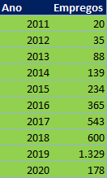

OporEmpregos é uma empresa de oportunidade de empregos. Criada em 2010 por duas pessoas com a vontade de realizar o sonho do próximo. Iniciamos nossa caminhada neste ramo, onde, conseguimos compreender ainda mais nosso papel, responsabilidade e compromisso com as pessoas que utilizam nossos serviços. Nosso objetivo, é, através de parcerias com outras empresas, oferecer emprego digno, com Carteira assinada, e direitos trabalhistas para aqueles que querem uma oportinidade no Mercado de Trabalho. Segundo pesquisa realizada pelo sindicato dos Comerciários de SP, em 2020, 47,4% da população preta ou parda estava mais inserida em ocupações informais, demonstrando o défict existenete entre as classes. Dessa maneira, trabalhamos para ajudar qualquer pessoa, independentemente de cor, sexo, entre outros...Com 10 anos de serviços prestados queremos contribuir ainda mais para a Sociedade, colaborando para o desenvolvimento do Mercado de Trabalho, reduzindo o número de desempregos, trabalhos ilegais e escrevos.Para fazer parte do nosso time,é preciso somente que seja feito o cadastro com informações pessoais, e pronto! Agora, é só procurar a vaga que mais lhe agrada e aguradar a contato da respectiva empresa. Somos uma empresa sem fins lucrativos, que juntamente com nossos parceiros, tem como finalidade a geração de emprego honesto e digno ,pois, seu sucesso é o nosso sucesso, sua felicidade, é a nossa felicidade.

Qualquer pessoa que tenha intersse em encontrar uma oportunidade de emprego. Na OporEmpregos todos são bem vindos, independentemente de cor racial, idade e genêro.
Porquê queremos uma Sociedade mais igualitária, onde todas as pessoas tenham as mesmas oportunidades e os mesmos direitos.
Queremos alcançar o emprego pleno e produtivo e trabalho digno para todas as mulheres e homens, inclusive para os jovens e as pessoas com deficiência, e remuneração igual para trabalho de igual valor.
Promover políticas orientadas para o desenvolvimento que apoiem as atividades produtivas, a criação de emprego digno, o empreendedorismo, a criatividade e a inovação e incentivar a formalização e o crescimento das micro, pequenas e médias empresas, inclusive através do acesso aos serviços financeiros.
Esperamos que você possa encontrar a sua vaga de emprego em nosso site, que seja uma excelente nova fase em sua vida e Boa Sorte!